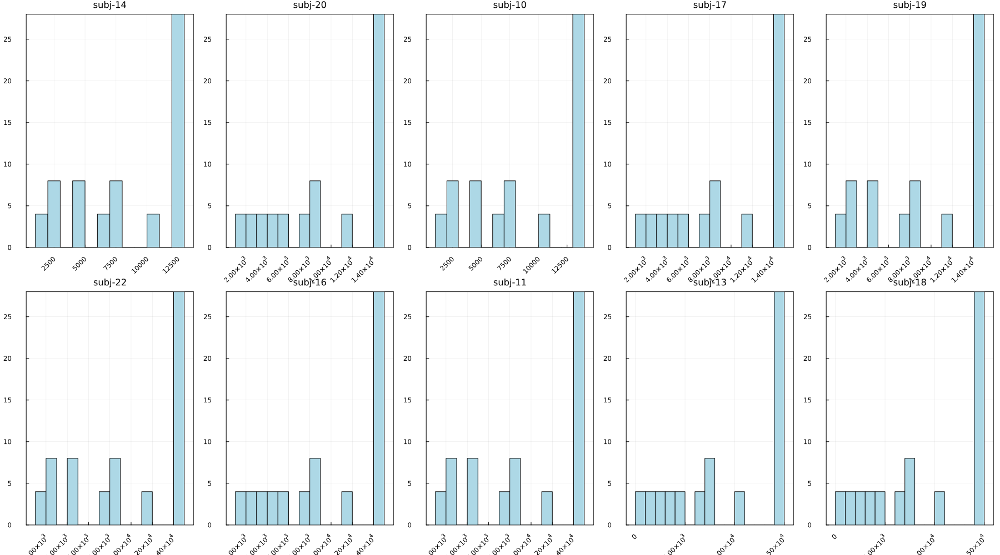

Parameter estimation on empirical data
Load packages
julia> using ADDMjulia> using CSVjulia> using DataFramesjulia> using StatsPlots
Read in data
Data in this tutorial are from 10 subjects in Kraijbich et al (2010). We will use the built-in data loading function ADDM.load_data_from_csv that expects a behavioral file with columns parcode, trial, rt, choice, item_left, item_right and fixations file with columns parcode, trial, fix_item, fix_time
If your data is not organized in this way you could either preprocess it so it does or you can read in the data however you want and reshape it with Julia to ensure it is organized as a dictionary of Trial objects indexed by subject/parcode. A Trial looks like
ADDM.Trial(1, 1474.0, -5, 5, Number[3, 0, 1, 0, 2, 0], Number[270.0, 42.0, 246.0, 62.0, 558.0, 296.0], #undef, #undef, #undef)where the first element is choice (-1 for left, +1 for right), second element is response time in ms, third is value of left option, fourth is value of right option. Fixation data is specified in the fourth and fifth elements as fixation location (1 for left, 2 for right) and fixation duration (in ms) respectively.
julia> krajbich_data = ADDM.load_data_from_csv("../../../data/Krajbich2010_behavior.csv", "../../../data/Krajbich2010_fixations.csv")Dict{String, Vector{ADDM.Trial}} with 10 entries: "14" => [Trial(-1, 2234, 2, 0, Number[2, 1], Number[399, 737], #undef, #undef… "20" => [Trial(-1, 1991, 4, 2, Number[1, 2, 1], Number[339, 679, 680], #undef… "10" => [Trial(-1, 3808, 4, 2, Number[1, 2, 1, 2, 1, 2, 1], Number[98, 426, 3… "17" => [Trial(-1, 1191, 0, 0, Number[1, 2], Number[340, 638], #undef, #undef… "19" => [Trial(1, 1449, 7, 5, Number[1, 2, 1], Number[258, 677, 99], #undef, … "22" => [Trial(1, 2882, 6, 2, Number[2, 1, 2, 1, 2], Number[259, 797, 595, 57… "16" => [Trial(1, 1251, 5, 5, Number[1, 2], Number[275, 660], #undef, #undef,… "11" => [Trial(-1, 1672, 5, 2, Number[1, 2, 1, 2], Number[338, 440, 319, 380]… "13" => [Trial(1, 3848, 1, 2, Number[1, 2, 1, 2], Number[1036, 757, 997, 757]… "18" => [Trial(-1, 13456, 2, 0, Number[1, 2, 1, 2, 1, 2, 1], Number[637, 2691…
Grid search
Using a grid of 64 parameter combinations with d in {0.0001, 0.00015, 0.0002, 0.00025}, μ in {80, 100, 120, 140}, θ in {0.3, 0.5, 0.7, 0.9} and σ = d*μ
julia> fn = "../../../data/Krajbich_grid.csv""../../../data/Krajbich_grid.csv"julia> tmp = DataFrame(CSV.File(fn, delim=","))64×3 DataFrame Row │ d sigma theta │ Float64 Float64 Float64 ─────┼─────────────────────────── 1 │ 0.0001 0.008 0.3 2 │ 0.00015 0.012 0.3 3 │ 0.0002 0.016 0.3 4 │ 0.00025 0.02 0.3 5 │ 0.0001 0.01 0.3 6 │ 0.00015 0.015 0.3 7 │ 0.0002 0.02 0.3 8 │ 0.00025 0.025 0.3 ⋮ │ ⋮ ⋮ ⋮ 58 │ 0.00015 0.018 0.9 59 │ 0.0002 0.024 0.9 60 │ 0.00025 0.03 0.9 61 │ 0.0001 0.014 0.9 62 │ 0.00015 0.021 0.9 63 │ 0.0002 0.028 0.9 64 │ 0.00025 0.035 0.9 49 rows omittedjulia> param_grid = Dict(pairs(NamedTuple.(eachrow(tmp))))Dict{Int64, NamedTuple{(:d, :sigma, :theta), Tuple{Float64, Float64, Float64}}} with 64 entries: 5 => (d = 0.0001, sigma = 0.01, theta = 0.3) 56 => (d = 0.00025, sigma = 0.025, theta = 0.9) 16 => (d = 0.00025, sigma = 0.035, theta = 0.3) 20 => (d = 0.00025, sigma = 0.02, theta = 0.5) 35 => (d = 0.0002, sigma = 0.016, theta = 0.7) 55 => (d = 0.0002, sigma = 0.02, theta = 0.9) 60 => (d = 0.00025, sigma = 0.03, theta = 0.9) 30 => (d = 0.00015, sigma = 0.021, theta = 0.5) 19 => (d = 0.0002, sigma = 0.016, theta = 0.5) 32 => (d = 0.00025, sigma = 0.035, theta = 0.5) 49 => (d = 0.0001, sigma = 0.008, theta = 0.9) 6 => (d = 0.00015, sigma = 0.015, theta = 0.3) 45 => (d = 0.0001, sigma = 0.014, theta = 0.7) 44 => (d = 0.00025, sigma = 0.03, theta = 0.7) 9 => (d = 0.0001, sigma = 0.012, theta = 0.3) 31 => (d = 0.0002, sigma = 0.028, theta = 0.5) 64 => (d = 0.00025, sigma = 0.035, theta = 0.9) 61 => (d = 0.0001, sigma = 0.014, theta = 0.9) 29 => (d = 0.0001, sigma = 0.014, theta = 0.5) ⋮ => ⋮julia> all_nll_df = DataFrame()0×0 DataFramejulia> best_pars = Dict()Dict{Any, Any}()julia> for k in keys(krajbich_data) cur_subj_data = krajbich_data[k] subj_best_pars, subj_nll_df = ADDM.grid_search(cur_subj_data, ADDM.aDDM_get_trial_likelihood, param_grid, Dict(:η=>0.0, :barrier=>1, :decay=>0, :nonDecisionTime=>0, :bias=>0.0)) best_pars[k] = subj_best_pars subj_nll_df[!, "parcode"] .= k append!(all_nll_df, subj_nll_df) end
To view best parameter estimates for each subject
julia> best_parsDict{Any, Any} with 10 entries: "18" => Dict{Symbol, Real}(:nonDecisionTime=>0, :bias=>0.0, :d=>0.00025, :bar… "20" => Dict{Symbol, Real}(:nonDecisionTime=>0, :bias=>0.0, :d=>0.00025, :bar… "10" => Dict{Symbol, Real}(:nonDecisionTime=>0, :bias=>0.0, :d=>0.00025, :bar… "17" => Dict{Symbol, Real}(:nonDecisionTime=>0, :bias=>0.0, :d=>0.00025, :bar… "19" => Dict{Symbol, Real}(:nonDecisionTime=>0, :bias=>0.0, :d=>0.00025, :bar… "22" => Dict{Symbol, Real}(:nonDecisionTime=>0, :bias=>0.0, :d=>0.00025, :bar… "16" => Dict{Symbol, Real}(:nonDecisionTime=>0, :bias=>0.0, :d=>0.00025, :bar… "11" => Dict{Symbol, Real}(:nonDecisionTime=>0, :bias=>0.0, :d=>0.00025, :bar… "13" => Dict{Symbol, Real}(:nonDecisionTime=>0, :bias=>0.0, :d=>0.00025, :bar… "14" => Dict{Symbol, Real}(:nonDecisionTime=>0, :bias=>0.0, :d=>0.00025, :bar…
Plot variability in the negative log likelihoods for each parameter combination for each subject
julia> wide_nll_df = unstack(all_nll_df, :parcode, :nll)64×13 DataFrame Row │ d sigma theta 14 20 10 17 19 ⋯ │ Float64 Float64 Float64 Float64? Float64? Float64? Float64? Floa ⋯ ─────┼────────────────────────────────────────────────────────────────────────── 1 │ 0.0001 0.01 0.3 12968.2 14736.5 13410.3 14736.5 1473 ⋯ 2 │ 0.00025 0.025 0.9 4064.17 4554.15 4050.76 4643.34 424 3 │ 0.00025 0.035 0.3 1230.28 1349.71 1208.65 1390.27 115 4 │ 0.00025 0.02 0.5 7751.85 8728.38 7842.11 8843.02 839 5 │ 0.0002 0.016 0.7 12949.3 14712.7 13315.6 14729.8 1468 ⋯ 6 │ 0.0002 0.02 0.9 7759.83 8745.2 7858.23 8845.45 843 7 │ 0.00025 0.03 0.9 2154.9 2393.87 2113.2 2461.3 211 8 │ 0.00015 0.021 0.5 6813.61 7686.71 6902.2 7771.7 736 ⋮ │ ⋮ ⋮ ⋮ ⋮ ⋮ ⋮ ⋮ ⋮ ⋱ 58 │ 0.0002 0.024 0.9 4624.5 5195.7 4634.38 5280.26 488 ⋯ 59 │ 0.00015 0.012 0.3 12968.2 14736.5 13410.3 14736.5 1473 60 │ 0.00015 0.018 0.3 10178.7 11501.1 10370.1 11599.8 1116 61 │ 0.00015 0.012 0.5 12968.2 14736.5 13410.3 14736.5 1473 62 │ 0.00015 0.018 0.5 10178.6 11500.2 10369.2 11597.9 1117 ⋯ 63 │ 0.0002 0.024 0.5 4625.16 5199.07 4640.09 5284.22 487 64 │ 0.00015 0.018 0.7 10178.3 11498.7 10366.7 11595.5 1117 6 columns and 49 rows omittedjulia> select!(wide_nll_df, Not([:d, :sigma, :theta]))64×10 DataFrame Row │ 14 20 10 17 19 22 16 1 ⋯ │ Float64? Float64? Float64? Float64? Float64? Float64? Float64? F ⋯ ─────┼────────────────────────────────────────────────────────────────────────── 1 │ 12968.2 14736.5 13410.3 14736.5 14736.5 14736.5 14736.5 1 ⋯ 2 │ 4064.17 4554.15 4050.76 4643.34 4243.8 4145.82 4459.22 3 │ 1230.28 1349.71 1208.65 1390.27 1151.13 1133.78 1310.57 4 │ 7751.85 8728.38 7842.11 8843.02 8393.8 8292.63 8601.27 5 │ 12949.3 14712.7 13315.6 14729.8 14680.7 14588.9 14639.9 1 ⋯ 6 │ 7759.83 8745.2 7858.23 8845.45 8431.19 8327.79 8645.86 7 │ 2154.9 2393.87 2113.2 2461.3 2118.81 2050.34 2323.26 8 │ 6813.61 7686.71 6902.2 7771.7 7360.3 7262.34 7577.06 ⋮ │ ⋮ ⋮ ⋮ ⋮ ⋮ ⋮ ⋮ ⋱ 58 │ 4624.5 5195.7 4634.38 5280.26 4882.57 4783.63 5099.91 ⋯ 59 │ 12968.2 14736.5 13410.3 14736.5 14736.5 14736.5 14736.5 1 60 │ 10178.7 11501.1 10370.1 11599.8 11162.4 11064.2 11373.2 1 61 │ 12968.2 14736.5 13410.3 14736.5 14736.5 14736.5 14736.5 1 62 │ 10178.6 11500.2 10369.2 11597.9 11170.4 11071.1 11383.4 1 ⋯ 63 │ 4625.16 5199.07 4640.09 5284.22 4874.81 4778.72 5090.62 64 │ 10178.3 11498.7 10366.7 11595.5 11176.9 11076.0 11391.5 1 3 columns and 49 rows omittedjulia> colnames = names(wide_nll_df)10-element Vector{String}: "14" "20" "10" "17" "19" "22" "16" "11" "13" "18"julia> colnames = string.("subj-", colnames)10-element Vector{String}: "subj-14" "subj-20" "subj-10" "subj-17" "subj-19" "subj-22" "subj-16" "subj-11" "subj-13" "subj-18"julia> N = length(colnames)10julia> @df wide_nll_df histogram(cols(1:N); layout=grid(2,5), legend=false, title=permutedims(colnames), frame=:box, titlefontsize=11, c=:blues, bins = 20, size=(1800,1000), xrotation = 45)Plot{Plots.GRBackend() n=10}
